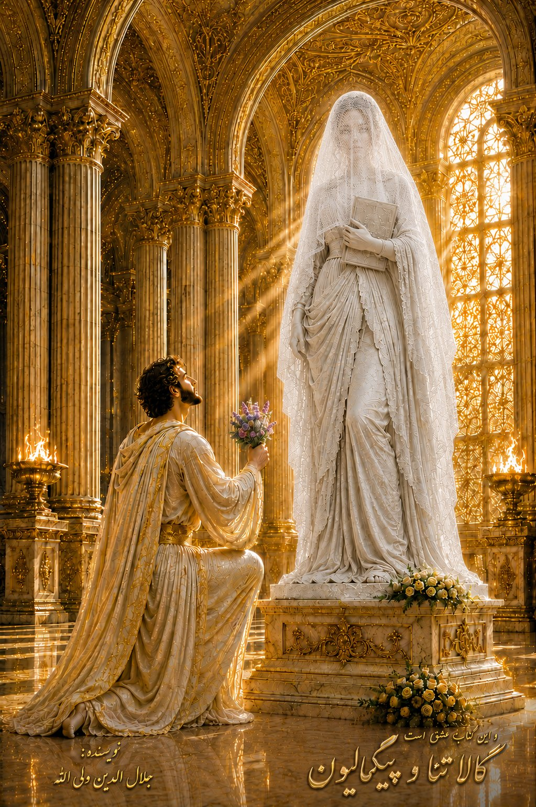

و این کتاب عشق است؛ گالاتئا و پیگمالیون
گالاتئا و پیگمالیون
رمانی از جلالالدین ولیالله منتشرشده توسط انتشارات صالحین.
درباره کتاب
در بارة این کتاب:
و این کتاب عشق است. کتابی با نگاهی بین المللی به عشق است. عشق چیست؟ چه دیدگاه ها و تعاریفی از عشق از نظر انسان وجود دارد؟ چه رابطه ایی بین عشق و روابط زناشویی وجود دارد؟ آیا عشق همان لذائذ جنسی است؟ چه در عشق دو دلداده چه عشق به نوع بشر و تعالی اخلاق و جامعة او، چه موانعی در راه رسیدن به عشق وجود دارد؟ آیا هر چه بلوغ فکری و عاطفی انسان تکامل یافته تر باشد عشق او واقعی تر و عمیق تر است؟ چه رابطه ایی بین تعالی فردی و تعالی جوامع انسانی و تمدن بشری و عشق وجود دارد؟
عشق مجازی چیست؟ آیا عشق مجازی در تعالی عقلانی و فکری و تعمیق احساسات و عواطف روانی انسان نقش دارد؟ آیا همان گونه که انسان در راه رسیدن به رشد فیزیکی و بدنی دارای مراحل تکاملی در درک عشق و حس آن نیز مراحل تکامل عقلی و معنوی وجود دارد؟ عشق چه نقش روانشناختی در آرامش روح و روان انسان دارد؟ آیا عشق می تواند موتور پیشران و محرک تمام قوای پنهان انسان باشد که زندگی و ملزومات آن را بسازد؟ آیا عشق نیروبخش و حیات آفرین است؟ آیا همان گونه که ارکان زندگی دو زوج با عشق ساخته و هموار می شود در ساختن مدینه فاضله و آرمان های متعالی اجتماعات بشری نیز عشق میتواند بنیاد و زیربنا باشد؟ چگونه عشق عالم گیر می شود؟
زیبایی چیست؟ چرا هرکس درک و تعریف خود را از زیبایی دارد؟ آیا زیبایی خود فضیلت است؟ عشق های موهوم و بیمارگونه کدامند؟ آیا عشق می تواند نوعی بیماری روانی باشد؟ چه رابطه ایی بین پاکی و فضیلیت و پرهیزکاری و عشق واقعی وجود دارد؟ آیا عشق در همه ذرات عالم جاری است؟ قصه و داستان و رمان چه نقشی در ساختن ساختار تخیل و تفکرات انسانی دارد؟
آیا تکامل نوع بشر از نقطه ایی آغاز شده که به شرح ماجراهای خود و قصه گویی و داستان سرایی پرداخت؟ و این ماجراها و تجربیات و داستان ها را نسل به نسل به آیندگان منتقل کرد؟ آیا بین مغز ما و مغز افلاطون و احساس ما و احساسات افلاطون و ارسطو تفاوت معنی داری وجود دارد؟ قصه و داستان کدام بخش معارف بشری را پوشش می دهند؟ چه رابطه ایی بین هنر و عشق وجود دارد؟ چه رابطه ایی بین عقل و عشق وجود دارد؟ نهایت التذاذ معنوی عشق به کجا می انجامد؟
آیا عشق می تواند درمان بسیاری از دردها اجتماع و فرد باشد یا این یک اغراق شاعرانه است؟ اغراق چه تاثیری در به جنبش درآوردن انسان در اقدام های او دارد؟ سرنوشت چیست؟ و به چه عواملی بستگی دارد؟ آزادی و اختیار چه نقشی در تعالی انسان دارند؟ چه رابطه ایی بین آزادگی و آزادگی و تعالی عشق وجود دارد؟ این ها و بسیاری دیگر سوالاتی هستند که در این کتاب به بخشی از آنها پاسخ داده شده است.
این کتاب مراحل تکامل جوانی پیکرتراش به نام پیگمالیون را به تصویر کشیده است. در هفت خوان عشق از طریق قصه های کودکانی و خیال انگیز سورآلیستی تا وقایع اجتماعی و طرح معضلات و موانع پیشرفت های اجتماعی، سر شار از قصه های عشق و وفاداری و پند و اندرز و راهکار و برون رفت از بن بست های فکری و روانی و اجتماعی است.
……
قصه عشق
قصه عشق یکی بیش نیست وین عجب از هر کسی که می شنوم نامکرر است(حافظ).
و این کتاب عشق است. داستان عشق و دلدادگی و سرمستی و مهجوری و محضوری و قرار و بیقراری است. غم هجران است و شادی وصال و شیوه تداوم هستی و زندگی است. جلوه های یار و تجلیهای بسیار دلدار است. نقش و خط و خال خوش دلآرام است. و دل تنگ ومشتاق و لرزان و بیقرار یار. یادگاری از صدای سخن عشق است.
از صدای سخن عشق ندیدم خوش تر یادگاری که در این گنبد دوار بماند.
اسطوره پیگمالیون یکی از جذاب ترین داستانهای اساطیری یونان است که همواره الهام بخش هنرمندان، نویسندگان و اندیشمندان بوده است. این داستان درباره پیگمالیون، یک پادشاه و مجسمه ساز ماهر قبرسی است که به دلیل کمال گرایی و عشق عمیق به هنر، به جای دلبستن به یک انسان واقعی، عاشق اثری میشود که خود خلق کرده است.
داستان گالاتئا و پیگمالیون اولین داستان عشق در عالم ماست. در واقع داستان گالاتئا و پیگمالیون داستان همه ماست. هریک از ما نقشی از یک موجود زیبا و منحصر به فرد در وجود خود داریم. که از قبل در هستی ما تعبیه شده است. و بیقراری ما از فراق و جستجوی اوست. گالاتئا و پیگمالیون در وجود هرکسی موجودی خاص اوست، متناسب با روحیات او. اگر مرد باشیم آن نقش یک زن است و اگر زن باشیم آن نقش یک مرد است. نقشی زیبا در وجود و ناخودآگاه ماست که تمام عمر به دنبال آن میگردیم. حتی اگر او را یافتیم و یک عمر در کنار او شاد و سبکبال زیستیم. باز در پایان راه دل ما بیقرار میشود گویی که گذر عمر به اندازه یک چشم به هم زدن بود. چرا بیقراریم؟ زیرا باز نقش دیگری را در روح و قلب خود داریم که به سوی او در سفریم. و او زیباترین الهه است. که زیباتر از او نیست. االههای که هر کس نقشی از او در ذهن خود دارد.
داستان پیگمالیون و گالاتئا داستانی است که زمان و مکان نمیشناسد. گرچه در قالب یکی از افسانهها و اسطورههای یونان باستان است ولی داستانی جهانی و فرا مرزی متعلق به همه ملتها و اقوام است. بنابر این در این روایت، داستان به صورتی جهان وطنی ذکر گردیده است که تعلق خاطر همگان را برانگیزد. این داستان انسان است. داستان عشق و دلدادگی است. عشق و دلدادگی داستانی ابدی و جهانی است.
داستان عشق داستان همه ماست. وقتی که این کتاب را میخوانید به یاد و خاطره ایام گذشته خواهید افتاد. یاد و خاطره عشق یا عشق های که داشتهاید. یاد جوانی و جاودانی. شور و سرمستی. و سبکبالی جوانی.
و اگر نوجوان هستید. در اندیشه خواهید بود که در برخورد با جناب عشق در آینده و حال خود چگونه رفتار کنید که خاطرهایی به یاد ماندنی برای همه عمر شما باشد.
عشق جوهرهای سرشته در وجود همه ماست. این قصه عشق پیگمالیون به گالاتئاست. قصه عشق شما چگونه است؟
در گذشته روایتهایی از این قصه شکل گرفته است. یک راوی به فراخور زاویه نگاه خود به عالم، به آن نگریسته است. و در آینده شاید مردمان دیگری در زمانهای دیگر و مکانهای دیگر روایتهای دیگری از این داستان ارائه دهند اما این روایت من است.
در روایت اولیه که اووید شاعر رومی در سال هشتم میلادی در کتاب دگردیسیها نگاشته است پیگمالیون زن محبوب خود را نمییابد. از یافتن ناامید میشود و به سمت و سویی میرود که متناسب با انتظارات خود از یک زن، مجسمه او را بسازد. او عاشق پیکری میشود که از ذهن او تجلی یافته و خود او را تراشیده و پیرایش و پردازش و آرایش کرده است.
برنارد شاو نویسنده انگلیسی در قرن نوزدهم با توجه جامعه طبقاتی جدید آن زمان، روایت دیگری از این داستان ارائه داده است که در آن شاو، فضیلت را در قالب آداب طبقه اشراف انگلیس در آن زمان میداند. در ایران صادق هدایت، روایتی نهیلیسی (پوچ انگاری زندگی) از این داستان با نام «عروسک پشت پرده» نوشته است که حاصل پوچ انگاری زندگی و گرفتاری در خلأ انزوا و اوهام میگساری به پایان تلخی میانجامد. نمیخواهیم بگوییم که صادق هدایت پیرو پوچی و پوچ گرایی بود. بلکه او در این داستان می گوید که نهایت جمع گریزی و فرد گرایی به پوچی می انجامد.
همچنین ژان لئون رژوم در فرانسه بر مبنای این اسطوره نقاشی می کشد. پیگمالیون و گالاتئا (Pygmalion et Galatée) نام اثر برجستهای از ژان لئون ژروم، نقاش و تندیسگر مشهور فرانسوی است که در سال ۱۸۹۰ میلادی خلق شد. این اثر اکنون در موزه متروپولیتن نیویورک نگهداری میشود. موضوع نگاره، پیگمالیون یک مفهوم اساطیر یونانی است و به عشق دیوانهوار هنرمند به آثاری که خلق میکند، اشاره دارد.
اگر مشتاق شدهاید به همه این روایتهای سری بزنید. به هر حال اگر آن نگارش ها نبود این روایت هم شکل نمیگرفت. همه اینها میراث فرهنگ و تمدن بشری است. این روایت، نگاهی واقع گرایانه در عین حال رمانتیک به این ماجرا دارد و مقدمهایی از نگاه فلسفی و عرفانی به عشق است. و بیان می دارد که هریک ما موجودی زیبا و ایده آل در نهاد خود داریم که تمام عمر به دنبال او میگردیم. و اگر یافتیم و در تطابق با آن نبود سعی در تغییر او در راستای ایدهآل های ذهنی و واقعی خود میکنیم. چه بسیار زنان که مردانی را به راه آورده اند و تعالی بخشیده اند و چه بسیار مردان که زنایی را از روی نسخه ایده آل خود به رئال یا واقعیت آوردهاند و تعالی بخشیدهاند.
از این دیدگاه ازدواج یک کارگاه پیکرتراشی است. که در آن به تدریج دل بستگی ها به زیباییهای ظاهری به سوی عشق به زیباییهای معنوی و روانی و اخلاق می گراید.
در این ماجرا خیال و واقعیت، در دنیای حقیقی با هم عجین میشوند. ایده آل در بستری رئال (در واقعیت زندگی) به وحدت و وصلت میرسند. و گویای آن است که برای فرد بالفعل ایدآلی وجود ندارد. مگر در تلاشی پیگیر ایده او عالی شود و این ایده متعال را با رئال یا واقعیت زندگی خود پیوند دهد.
زندگی سفری است برای یافتن. هر یک از ما آن پیکره زیبا و منحصر به فرد را اول در خانه و کارگاه دل و وجود خود و در آسمان خیال خود مینگریم و آرزو میکنیم که روزی او را ملاقات کنیم تا در کنار او خوشبخت شویم و در طی طریق این عالم به عالم فراگیر عشق رهسپاریم.
پیگمالیون پیکرتراش در این داستان، ناامید از پیوند با محبوب خود، میرود که در هر رویارویی با عشق کمال یابد تا در ذهن خود نقش واضحی از محبوب را رویت کند و قادر به تراش آن از سنگ مرمر باشد. و بر او چنان عشق ورزد به امید آنکه، شاید روزی این نقش بی بدیل، حیات یابد و او را از خشونت و سردی و نیاز به این دنیای دون و سنگلاخ برهاند. و در کنار او مسیری زیبا و شاد به سوی آینده و خوشبختی را سپری نماید.
این مجموعه شامل قصهها و داستانها و ماجراهایی است که نه تنها برای بزرگسالان بلکه برای نوجوانان و جوانان قصهایی دارد. نه تنها میتواند در عشق و زندگی الهام بخش جوانان باشد بلکه آنها روزی این کتاب را در دست گرفته در رختخواب برای کودکان خود خواهند خواند تا در خواب آنان یاری کنند و تخیل آنها را غنا بخشند.
در این کتاب علاوه بر شعر و ماجرا و بحثهای فلسفی و عرفانی داستان جن و پری و اراوح و شهر قصههای مادر بزرگ است. علاوه بر اعتراض به جهالتهای تاریخی بشر و نکوهش خشم و خشونت و خیانت و بغض و بخل و حسد، جهدی است برای درک و فهم عشق و تفاهیم متقابل و تحمل یکدیگر در رهسپاری به سوی صلح و عشق و مهر پایدار.
چه در اسطوره اووید و چه در این روایت، حال و هوای قصه به زمانی برمیگردد که هنوز در یونان و روم هیچ آئین و دین رسمی ظهور و بروز نیافته است و در آنجا اسطوره الهه ها، مانند ونوس و آفرودیت و هرا و آتنا در اذهان نقش بسته است. و عقاید مردمان نواحی مختلف متکی بر باورهای قومی و قبیله ایی بوده است.
آنچه میگویم بقدر فهم توست مُردم اندر حسرت فهم درست(مولانا)
مشخصات کتاب
فهرست قصهها و مطالب
نمایش / پنهان کردن فهرست کامل کتاب
- قصه عشق
- پیگمالیون
- کودکی پیگمالیون
- قصه ارواح در پشت بام حمام
- پدر بزرگ و مادر بزرگ
- قصه دنیای شیرین
- حکمت پدر بزرگ
- قصههای مادر بزرگ
- قصه ماهرو و آرش
- دنیای قصهها
- عشق در نگاه پدر بزرگ
- عقل و عشق در نظر مادر بزرگ
- چهارده سالگی پیگمالیون
- مروارید
- قصه عروسک مروارید
- داستان مرگ پیگمالیون
- قصه شهر ارواح
- قصه عروسکی برای مروارید
- شکوه مادر
- خواهری چون برلیان
- برلیان جواهری در کنار برادر
- سحر کلام
- قدرت قصه
- خبر آمدن مروارید
- عشق از دیدگاه برلیان
- قصه عشق مروارید
- فراغ مروارید
- خیال مروارید
- قصه عشق آرتمیسیا
- رویارویی با عالیجناب عشق
- شهر چشمان آرتیمسیا
- خواب و خیال آرتمیسیا
- خواستگاری آرتیمسیا
- قصه عشق هلن
- جلوه هلن
- چگونه میتوان یک دوشیزه را به خود علاقمند کرد؟
- دیدار با هلن
- داستان هلن، زیباترین زن دنیا
- اسطوره هلن، شاهزاده دو سرزمین
- زیبایی از نظر پیگمالیون
- درد فراق هلن
- یاد هلن
- باغ بهشت
- هلن در کشتی
- پدرو
- هجران هلن
- هیاهوی هلن در کشتی
- در فراغ هلن
- نامهای از هلن
- قصه عشق رویا
- رویا
- نمایشنامه ازدواج تولد مکرر
- مسئله این است کدامیک؟ دارا یا زارا؟
- رویا در چشمان پیگمالیون
- نقش رویا
- دیدار رویا
- نشان عشق، والاترین نشان
- احساس رویا
- احساس پیگما
- دیدار برلیان با رویا
- پایان رویا
- قصه عشق کراتیا
- مردمان شهر گزنوس
- گستره عشق
- مردمان گزنوس چه کسانی بودند؟
- عشق و آزادی
- پیگمالیون در شهر گزنوس
- پدیدهای به نام کراتیا
- جلوه نیکوکراتیا
- گفتگوی کراتیا و پیگما
- مرام کراتیا
- نقشی از کراتیا
- دوستی دیرینه کراتیا و برلیان
- هماورد کراتیا و پیگما
- کراتیا که بود؟!
- خیال کراتیا
- جزیره ناشناختهای به نام کراتیا
- عشق در نظر کراتیا
- جهانگستری عشق
- اسرار نهان
- زن کودن
- علت عشق
- قصه چرخ گردون
- فیلفوس
- دیدار با فیلفوس
- شبنشینی نخبگان
- آیا در عالم الههای هست؟
- قصه عشق لیلی و راز فیلفوس
- قصه هیرون و کیمیون
- دو عامل موفقیت
- چشمه شفابخش
- قصه هرون مخوف و چشمه مرگ
- قصه عشق هیرون و ایوا
- باران عشق نفرت را میزداید
- دره مرگ
- تداوم عشق ایرا و خوشبختی هیرون
- مرگ عشق در هیرون و دگردیسی او
- قصه سوزناک فراق ایوا
- مستی عشق
- سزای مجرمین
- هیرون مخوف
- قصه عشق فدرا
- عشق به مردم
- یک شب هولناک
- سدبانان
- هفاستوس
- قیام هفاستوس
- اواغوراس
- خواستگاری کراتیا
- در تمنای کراتیا
- عشق و هنر
- شکوه کراتیا
- عشق و فهم درست
- قصه عشق الکترا
- احساس الکترا
- جلوه الکترا
- شرح عقل و عشق
- عشق خواهر به برادر
- برلیان و پیگما
- الکترا نماد عشق و عقل
- اندیشمندان زمین
- قصه بت چین و امپراطور لیو هنگ
- سرانجام عشق بت چین و امپراطور چین
- بت چین که بود؟
- سفر عشق
- راهنمایان بشر
- اما لوجیا که بود؟
- عشق از نظر بت چین
- الکترا در قصر خود
- روایت الکترا از عشق
- داستان فانوس
- قصه هیرو و لیاندر
- عشق و شهوت، دو داستان واقعی
- قصه عشق ونوس و زنون
- قصه هرا، تجسمی از غلبه شهوت
- فرمانده هگساندروس
- و اما هرا که بود؟
- زشتی تجاوز
- خوشبختی یا موفقیت
- مزرعه عقاب کوه
- داستان شاهزاده و کاتب دربار
- قصه عشق مهرانگیز و رادمهر
- عشق از نگاه رادمهر
- عشق از نگاه مهرانگیز
- دوران هجران و جدایی دو دلداده
- مباحثه دو دلداده دیگر
- قدرت عشق و زیبایی
- قدرت عزم و اراده
- سحر زبان خوش
- مکاشفه اندیشمندان زمین
- فرهنگها و زنان
- روند تکامل اجتماعات بشری
- خانه دیونیسوس و آیون
- عالمگیری عشق
- غروب الکترا
- قصه عشق ونوس
- پایان سخن
- پایان
درباره نویسنده
خرید در ایران
فروش جهانی
نسخه چاپی بینالمللی
اطلاعات قیمت و روش ارسال بینالمللی در این بخش قرار خواهد گرفت.
اطلاعات فروش جهانیحقوق نشر
کلیه حقوق اعم از چاپ و نشر و کپی و اقتباس، نشر الکترونیکی و فروش و هر شکل دیگر بهرهبرداری از این اثر در انحصار انتشارات صالحین است.
هرگونه استفاده غیرقانونی مورد پیگرد قرار میگیرد.
چاپ، نشر و توزیع از انتشارات صالحین.
شماره تلفن توزیع و فروش: 09125791009